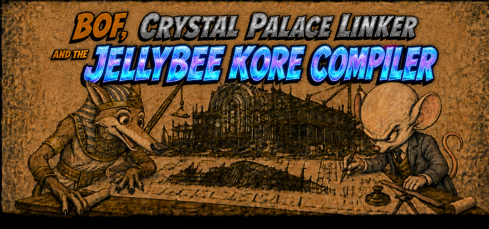

BOF, Crystal Palace Linker and The JellyBee KORE Compiler: The new era of implants modularity
JellyBeeeKORE

Overview EDR, C2 and JellyBee System
I did not add System because it looked good. I called it System because it really is a complete ecosystem.
JBKORE compiles. SwarmFactory produces the components. Warehouse receives them and maintains their inventory. ControlCenter queries that information and uses the artifacts during execution. Each element fulfills a function within a complete chain.
Red Team exercises against modern security systems already require more than a server, an implant and a communication channel. I am not referring only to CTF or isolated tests, but to exercises on segmented infrastructures, with identity controls, nodes without Internet access, different versions of Windows, EDR and SIEM.
Architectures based on a monolithic agent, a rigid protocol and capabilities permanently incorporated within the implant have been becoming limited for this type of exercises. The model that needs to create a process and inject a complete capability for each post-exploitation action also presents limitations.
C2 platforms are not going to stop being command and control systems, because they will continue needing to receive connections, deliver tasks and collect results. What is already happening is that those functions are becoming part of broader architectures.
Around the C2 appear payload generators, communication profiles, loaders, post-exploitation modules, transformation systems, capability repositories, inventories and compilation services.
Mythic, for example, separates payload types, C2 profiles, translation services and their containers. Cobalt Strike allows extending the client, replacing the reflective loader, incorporating BOF and defining injection techniques. Crystal Palace separates capabilities from the tradecraft components that are applied during linking.
That is why I use the word System. The server and the implant continue performing command and control functions, but they form part of an ecosystem that produces, transforms, stores, distributes and executes capabilities.
Well, evasion… And I do not want to call it evasion because evading does not consist only of executing a technique for one minute on an isolated machine. Nor does it consist of loading a complete tool inside a process, checking that it works and considering the problem solved.
Within this research I use a more demanding operational criterion. When I speak of evasion I mean remaining through reboots, strong hardening rules surviving for days or weeks penetrating as much as possible.
This presents a series of problems that even in a scenario in which we did not have to deal with advanced security systems, these also already present complex problems in modern windows compilations.
Although there is no single source that describes everything a process does. Visibility is built by combining kernel callbacks, ETW, file-system minifilters, Windows Filtering Platform and user components.
Windows offers increasingly clear telemetry, from which modern detection systems feed and this
A driver can register through PsSetCreateProcessNotifyRoutineEx or PsSetCreateProcessNotifyRoutineEx2 and receive a notification when a process is created or terminated. During creation, PS_CREATE_NOTIFY_INFO can provide the parent process, the file object related to the image, the executable name, the command line and the status with which creation will continue.
PS_CREATE_NOTIFY_INFOtypedef struct _PS_CREATE_NOTIFY_INFO
{
SIZE_T Size;
union
{
ULONG Flags;
struct
{
ULONG FileOpenNameAvailable : 1;
ULONG IsSubsystemProcess : 1;
ULONG Reserved : 30;
};
};
HANDLE ParentProcessId;
CLIENT_ID CreatingThreadId;
struct _FILE_OBJECT *FileObject;
PCUNICODE_STRING ImageFileName;
PCUNICODE_STRING CommandLine;
NTSTATUS CreationStatus;
} PS_CREATE_NOTIFY_INFO, *PPS_CREATE_NOTIFY_INFO;The WDK declaration separates the parent process from CreatingThreadId.UniqueProcess, which identifies the creating process. ImageFileName and CommandLine can be null, and the driver can write an error to CreationStatus to prevent creation from continuing.
It is a clean event because it provides a concrete point in time and allows an identity to be created for the new instance. But it does not contain all the information the EDR will need during the rest of its life.
PsSetLoadImageNotifyRoutine allows receiving notifications when an image, such as an EXE or a DLL, is loaded or mapped. ObRegisterCallbacks allows registering callbacks for certain operations with process and thread handles. Minifilters can observe file-system operations. WFP allows inspecting and filtering network activity. ETW provides events produced by kernel and userland components.
The sensor collects information from these sources and maintains the context needed to relate it. In userland it can add the executable signature, its hash, the user, the session, the integrity level, the command line, the process genealogy, its reputation and the policy applied to the endpoint.
In Elastic, for example, process.entity_id allows correlating events that belong to the same instance. A sequence can begin with process creation, continue with a network connection and add other events associated with the same identifier.
The creation callback can be understood as a first interview: who requests the creation, what the parent is, what image is going to execute, what command line it receives and under what context it appears.
The process continues generating activity and the sources continue producing events. What can vary, depending on the product and its policy, is which events are enriched, which are retained, which are sent to the backend and which are used only for local analysis.
Outside debugging environments, Windows exposes supported functions so that legitimate software obtains the information it needs. This contract allows products such as EDRs to observe the system without directly manipulating critical kernel structures, a practice capable of causing instability and blue screens.
A good modern example was the CrowdStrike incident and the death blue reboot loop of all systems that had received the update that fed the C-00000291*.sys sensor through a direct userland channel.
PatchGuard appeared in Windows x64 to protect code and certain critical kernel structures against unsupported modifications.
It restricted the model based on directly patching regions such as certain service tables, interrupt tables and kernel code.
Before this transition it was possible to find products that installed hooks on DLL APIs in userland and solutions that modified structures such as the SSDT or the IDT from kernel. When several products tried to modify the same points, conflicts, compatibility problems, instability and blue screens could appear.
With x64 and PatchGuard, products had to rely increasingly on supported contracts: process and thread callbacks, image-load callbacks, object callbacks, registry callbacks, minifilters, WFP and ETW providers.
Well, back to what we were discussing.
These sources allow relating the events that appear from the moment a process is created until it terminates. The EDR does not need to record every instruction executed or constantly reproduce the complete state of the process.
It receives concrete events, enriches them and associates them with the corresponding identity: process creation, thread creation, image loading, handle operations, file activity, registry modifications, network connections and termination.
The observable surface depends on what operations a capability performs, for how long, on what objects and through what process.
Modularity does not eliminate that telemetry. It allows reducing the content that remains incorporated into the implant and loading each capability when it is needed.
Within my research, complete modularity is one of the lines I consider most suitable for this model.
The trend I analyze is the reduction of permanent dependencies and the separation between the implant, the capabilities and the mechanism that loads them.
Raphael Mudge is the developer among others of Cobalt Strike, this command and control software feeds the beacon with the well-known Beacon Object Files or BOF, these allow operators to develop in a comfortable way something similar to a personal post-exploitation module which you will be able to execute within the implant context in any of the interconnected beacons.
This architecture changed the course of offensive exercises more than 5 years ago, since until then writing to disk or starting new processes again and again was inevitable.
I mark this last part as a personal conclusion based on my knowledge, I never write personal conclusions if they are not perfectly demonstrated, but for this paragraph I will make an exception:
Currently due to the extremely rapid evolution in security defenses, the architecture has been asking for total modularity in the implant during every day that the offensive exercise lasts. However the Beacon and BOF architecture makes those modules that you can easily develop dependent on Beacon, which ends up limiting the operator's maneuverability and the implementation of the abstract attack chain that requires a fluid and volatile concatenation in memory of the phases of each attack chain.
Once again Raphael Mudge shares another brilliant solution in the form of a linker, which in my opinion will help beacon to endure in a future that is already present. (up to here my conclusion)
Beacon Object Files

A Beacon Object File is a COFF object built to execute within the Beacon contract. it can use a limited set of functions provided by Beacon and declare external APIs through DFR.
Beacon is the Cobalt Strike implant. It can execute in the process where it was started or remain hosted in another process through the selected artifact, loader or injection mechanism.
First beacon.dll crosses and the target process receives the complete implant in the case represented by figure 1.
When Beacon establishes communication, it provides the functions needed to receive tasks and load modules. BOFs can use internal APIs such as:
BeaconPrintf
BeaconOutput
BeaconDataParse
BeaconDataInt
BeaconDataExtract
BeaconSpawnTemporaryProcess
BeaconInjectProcess
BeaconInjectTemporaryProcessModularity works here through a contract of pieces. The BOF does not execute on its own . Beacon has to interpret the object, prepare its sections, resolve its references and transfer execution to its entry function.
Even if the transport is staged and a small component responsible for retrieving the next stage arrives first, the final image continues needing the layout expected by the compiled code.
That means interpreting the headers, reserving the space described by SizeOfImage, copying the necessary sections according to their RVAs, preparing regions without initialized data, applying base relocations, resolving imports, completing the IAT, setting protections and transferring execution to the corresponding entry.
To produce it we have gone through the entire compilation phase from the C code. In GCC, for example, the program passes through internal representations such as GENERIC, GIMPLE and RTL. Analysis and optimization passes are applied over them. Then the instructions for the target architecture are generated and the assembler produces the COFF object.
What, then, is a COFF object? It is a compilation unit that already contains machine code, but still does not know the definitive layout of its sections or the final position of all the symbols it uses.
.
A COFF relocation describes where a pending reference exists, which symbol participates in it and what operation must be performed when its position is known. Windows represents each record through IMAGE_RELOCATION:
IMAGE_RELOCATIONtypedef struct _IMAGE_RELOCATION
{
union
{
DWORD VirtualAddress;
DWORD RelocCount;
};
DWORD SymbolTableIndex;
WORD Type;
} IMAGE_RELOCATION, *PIMAGE_RELOCATION;VirtualAddress points to the offset within the section where the content must be modified. SymbolTableIndex identifies the symbol and Type determines the necessary operation.
Let us imagine a function called rajkit, defined in rajkit.asm, and a call:
call rajkitThe reference is made against the rajkit symbol, even though the file is called rajkit.asm.
In x64, a direct call usually uses a 32-bit relative displacement. The assembler emits the E8 opcode, reserves four bytes for the displacement and generates an IMAGE_REL_AMD64_REL32 relocation.
While it does not know the final layout, it cannot calculate the distance correctly. That is why it keeps the reference through the relocation.
When the position of the symbol is known, the linker conceptually calculates:
disp32 = S + A - (P + 4)S represents the address assigned to the symbol. A is the additional value encoded in the field. P represents the address of the displacement field itself. Four is added because the CPU interprets rel32 relative to the byte located after that field.
The function is not transformed into a memory address. What is transformed is the reference that needs to reach it.
In AMD64, types such as these may appear:
IMAGE_REL_AMD64_REL32
IMAGE_REL_AMD64_ADDR64
IMAGE_REL_AMD64_ADDR32NB
IMAGE_REL_AMD64_SECTION
IMAGE_REL_AMD64_SECRELEach one represents a different expression. REL32 describes a relative distance ADDR64, a 64-bit virtual address and ADDR32NB, a value without the image base, equivalent to a 32-bit RVA.
In a conventional compilation, the linker enters next.
The linker gathers the objects and libraries, selects the necessary contributions, resolves symbols and organizes the output sections.
It then walks through the relocations, locates the fields it must correct and writes the calculated values.
If rajkit is defined in another object, the linker looks for the symbol in the other objects and libraries. If it finds it, it resolves the reference. If there is no valid definition, it generates an unresolved external symbol error.
A REL32 relocation can only represent a signed 32-bit distance, approximately ±2 GiB. A complete linker can reorganize contributions or generate a thunk when the architecture and reference type allow it. A more limited COFF loader can reject the reference if the target is out of range.
Now let us think about a function imported from a DLL.
The linker does not know the definitive virtual address that function will have during execution. To resolve this dependency it uses the information from the import libraries and builds the PE import structures.
If we use __declspec(dllimport), the compiler can generate a symbol such as:
__imp_MessageBoxAAnd an equivalent call:
call qword ptr [rip + displacement]The relocation points to the __imp_MessageBoxA slot, not directly to the MessageBoxA code.
The linker establishes where that slot will be and builds the import descriptors, the DLL names, the Import Lookup Table and the IAT.
When linking finishes, the COFF relocations from the objects have been consumed. The final PE image can contain another class of relocations: base relocations, normally stored in .reloc.
COFF relocations allow building the PE. Base relocations allow adapting certain absolute values if the image is loaded at a base different from the one indicated in ImageBase.
Suppose the linker uses:
PreferredImageBase = 0x140000000And that an absolute pointer exists inside the image:
0x140003000If Windows loads the image at:
ActualImageBase = 0x180000000the loader calculates:
delta = ActualImageBase - PreferredImageBase
delta = 0x40000000If an IMAGE_REL_BASED_DIR64 entry exists for that pointer, it applies:
0x140003000 + 0x40000000 = 0x180003000The value points again to the same element within the displaced image. IMAGE_REL_BASED_DIR64 indicates that the delta must be applied over a 64-bit field.
A relative reference between two positions in the same image normally does not need a base relocation. If both positions move together, the distance between them remains the same.
A reference may have required IMAGE_REL_AMD64_REL32 during COFF linking and produce no entry in .reloc, because the linker has already calculated a distance that does not change when the complete image moves.
The Windows loader intervenes afterward. Windows receives the linked PE, not the original COFF objects.
The system maps the sections according to their RVAs, sizes, alignments and characteristics. It obtains the actual image base, processes the base relocations and resolves the dependencies described by the import directory.
For each imported DLL, it locates or loads the corresponding module. It then resolves each function by name or ordinal, processes forwarders when they appear and writes the effective address into its IAT slot.
When the CPU executes:
call qword ptr [rip + displacement]the displacement leads to the IAT and the entry already contains the API pointer.
So, what did Raphael Mudge do with the BOF?
He did not modify the COFF format or add new relocation types. He defined a contract so that Beacon could directly receive and execute a COFF object without first transforming it into a conventional PE.
When we compile a BOF through gcc -c, we stop the toolchain before linking. The result retains sections, symbols and relocations. It does not contain a definitive ImageBase, a prepared PE IAT or an Optional Header that allows it to be loaded through the Windows loader.
Beacon receives the object and acts as a reduced COFF linker and loader. It reads the header, enumerates the admitted sections, reserves memory, copies their content, calculates the base assigned to each section, queries the symbol table and applies the supported relocations.
For an internal symbol it can calculate:
address =
base assigned to the section +
Value of the symbolFor external functions it uses DFR, Dynamic Function Resolution.
The logical convention is:
LIBRARY$FunctionFor example:
DECLSPEC_IMPORT BOOL WINAPI KERNEL32$CloseHandle(HANDLE);With MinGW and DECLSPEC_IMPORT, the COFF symbol can appear decorated as:
__imp_KERNEL32$CloseHandleKERNEL32$CloseHandle identifies the module and the function. __imp_ indicates that the code expects to access it through an import pointer.
Beacon identifies the library and the function, obtains the corresponding pointer and makes it accessible to the BOF code. The implementation needs to provide a location compatible with the indirect reference generated by the compiler and apply the relocation that connects the instruction to it.
If the rel32 field is at P and the slot prepared by the loader is at S, the value will be:
disp32 = S - (P + 4)The CPU uses that displacement to reach the slot and obtains the API address from it.
DFR provides the information needed to resolve the external symbol. The relocation connects the instruction to the position that represents that symbol. If Beacon cannot resolve the function, it rejects BOF execution.
The Windows loader does not process the BOF. Beacon processes it.
The standard BOF needs a loader inside the target PID
Copying the .o file and jumping to its first byte does not execute a BOF. The target still has to lay out the sections, prepare the uninitialized data, apply the relocations, resolve each external symbol and locate go..
goCrystal Palace Linker Engineering and the new era of position dark hole offsensive 1

Crystal Palace receives objects and applies a linker-script language oriented toward position-independent code, modules and tradecraft components. The make commands configure an exportable representation it is export that emits its bytes.
The path documented by Simple BOF Runner begins with cpl link loader.spec /path/to/bof.x64.o out.bin. In the x64 branch, loader.spec loads bin/loader.x64.o, executes make pic +gofirst +optimize, applies ../simple_pic/services.spec and merges ../libtcg/libtcg.x64.zip.
Inside that upper PIC, the script takes the BOF through push $OBJECT and first executes make object +optimize. Then, bofprep.spec "go" sets go as the entry, merges bofapi.x64.o and connects through attach the BeaconData*, BeaconFormat* and BeaconPrintf functions present in that partial API.
The next step declares LoadLibraryA, GetProcAddress and BeaconOutput through import. These three functions are not part of what bofprep.spec merges: the runner delivers them through BOFIMPORTS. The nested export then produces the BOF PICO bytes; link "my_data" associates those bytes with the section where loader.c declares __BOFDATA__.
The final export writes out.bin as a PIC ready to execute. Because of +gofirst, the runner's go() entry remains at the beginning of the block. The PICO remains embedded as data because its contract includes directives that PicoLoad must process during execution.
After copying out.bin into memory and transferring control to offset 0, go() calls run_bof(__BOFDATA__, NULL, 0). run_bof fills BOFIMPORTS, reserves memory for code and data, executes PicoLoad and obtains dstCode + entryAddress through PicoEntryPoint. That address is invoked as BOFMAIN with NULL and zero length.
BeaconOutput is not a mandatory part of the return path. It executes only if the BOF calls it; in that case, the runner implementation sends the output through dprintf. The BOF can also return without producing output.
The PICO runner must close its dependencies before crossing
The source process can use BeaconInjectProcess or another runtime to move out.bin, but the injection function does not prepare the embedded BOF. Before the transfer, loader.spec has to have produced an outer PIC with a valid entry at offset zero, incorporate PicoLoad and declare all the functions that the PICO will receive through BOFIMPORTS.
The target does not need a complete Beacon because the runner carries the PICO loader and the implementations merged by linking. It does need each pending import to have a valid provider within its own address space. The BeaconOutput in this example ends in dprintf; retrieving that output from another PID requires a shared buffer, a later read or an IPC channel added by the runtime.
The compiler has already made decisions before Crystal Palace receives the object. It has already selected instructions, created sections, generated symbols and emitted the corresponding relocations.
If an instruction located at P references a string located at S, it can write:
disp32 = S + A - (P + 4)As long as the code and the string move together, the distance will remain valid regardless of the base where the block is copied.
Crystal Palace distinguishes three main configurations:
make coff does not convert the object into shellcode. The result remains a COFF prepared for a loader compatible with its contract.
make object prepares a PICO. Within Crystal Palace terminology, the PICO retains the facilities for working with code, strings, initialized data, .bss and DFR, but needs a PICO loader that interprets the generated directives and completes the load.
make pic seeks an output that can execute as position-independent code. To do so it must resolve the internal references that depend on the layout of the code and data.
Crystal Palace can also combine objects through merge and object libraries through mergelib.
If an object contains a reference to an external symbol and another merged object provides its definition, Crystal Palace can assign it a position and resolve the relocation.
The .spec language allows linking resources to sections or symbols. For example, a program can declare an array within a specific section and the link command can place the bytes of a resource in that section.
Crystal Palace then knows the position of the resource within the result and can correct the instructions that reference it.
It also allows patching values, renaming symbols and modifying relationships between functions.
redirect rewrites calls or references so that they pass through another function. attach allows associating additional logic with certain points. These operations require analyzing the existing references and encoding them again according to the new layout.
Crystal Palace can apply transformations such as:
+optimize
+disco
+mutate
+relax
+unwind+optimize walks through references between functions and removes those that are not used. +disco modifies the order of the functions. +mutate rewrites certain instructions to transform constants. +relax simplifies some references to global variables. +unwind generates unwind information for x64.
In the case of DFR, Crystal Palace can locate references in the form:
MODULE$Functionand transform them to use a resolver defined in the .spec.
For example:
dfr "resolver" "ror13"indicates that the DFR references must be converted into calls to the indicated resolver using the hashes calculated according to the ror13 contract.
It can also use:
dfr "resolver" "strings"to prepare the module and function names and pass them to the resolver as strings.
In this result it is not necessary to build a PE IAT. Crystal Palace rewrites the reference so that the code uses the resolver during execution.
Internal and external references are processed differently.
An internal reference can be resolved during linking if Crystal Palace knows the source and target positions. A reference to a Windows function needs a resolver, a pointer provided during linking or a contract that the PICO loader can complete.
Global variables also require treatment.
A constant can appear in .rdata, an initialized variable in .data and an uninitialized variable in .bss. In a PE image, the loader reserves the necessary regions and prepares .bss with zeros. In PIC that work does not exist automatically.
Crystal Palace has mechanisms such as fixbss to rewrite accesses and obtain a valid base for that storage during execution.
x64 unwind information requires another treatment. Options related to unwind can generate .pdata and .xdata, but the runtime that executes the result must retain that information and register it according to its contract.
The compiler can also introduce dependencies that do not appear explicitly in the C code.
A switch can generate a jump table. A function with a large stack allocation can produce a call to __chkstk. Certain divisions, memory operations or language constructs can introduce runtime helpers.
If the object contains a reference that Crystal Palace cannot resolve within the selected output format, it reports the pending relocation. The code, compiler options or .spec file must be adapted to satisfy it.
The JellyBeeKORE Compiler and the new era of position independent offsensive chains 2

Its function is to transform the source code according to the contract defined to produce JellyBeeKORE PIC. .
The same fundamental needs still exist here: transform the program into instructions, establish the layout of the code and data, resolve the internal references and define how the external functions will be located.
The difference in the intervention point is that JBKORE can control those decisions during code generation, before receiving a COFF conditioned by another toolchain.
The emitted instruction starts from this call:
call InternalFunctionJBKORE can represent it internally through:
type = REL32
source = displacement field
target = InternalFunction symbolAfter laying out the functions within the blob, JBKORE calculates:
disp32 =
offset of InternalFunction -
offset of the next instructionBecause both values are offsets within the same block, the displacement does not depend on the absolute address where the shellcode is copied.
During compilation, that fixup performs the work that a relocation would perform during linking. It can exist as an internal JBKORE structure and disappear after the definitive result is written.
Data can follow the same model.
A string, a table or a structure incorporated into the blob can be reached through a RIP-relative reference:
lea rcx, [rip + displacement]When JBKORE knows the instruction offset and the data offset, it calculates:
disp32 =
offset of the data -
offset of the next instructionThe reference remains valid if the whole block changes base.
A reference relative to a known base in the context itself can also exist. In that case, the code does not depend on the base of the PE module, but on a pointer provided according to the entry contract.
The pinit contract provides the initial context needed to execute JellyBeeKORE PIC.
If the context enters through RCX and is retained in R15, the code can maintain a stable reference during internal calls:
mov r15, rcxR15 is a nonvolatile register within the Windows x64 ABI. The functions that form part of the contract must respect that condition.
Before invoking a function compatible with the Windows x64 ABI, the code must keep the stack aligned to 16 bytes at the point required by the convention and reserve the 32 bytes of shadow space.
A call scheme can take an equivalent form:
sub rsp, 0x28
call rax
add rsp, 0x28The first 0x20 bytes correspond to the shadow space. The remaining eight bytes allow maintaining the proper alignment according to the state of the stack at that point.
JBKORE has already closed the layout and the internal references of the block, but the runtime still has to prepare the entry state. Before transferring control it reserves storage for the PIC, the context, the CtxArgv table, its strings and the output buffer. It then writes into the context the addresses those elements have within the target process.
External APIs cannot be encoded through fixed addresses. JellyBeeKORE PIC does not have an IAT prepared by a PE linker and the Windows loader will not process its imports.
JBKORE must generate the contract needed for those functions to be located during execution.
In the resolver design, the interface can be represented through:
void *jbApiResolve(
uint32_t moduleHash,
uint32_t functionHash
);The resolver receives the identification of the module and the function and returns the corresponding pointer.
To locate the modules already loaded it can start from the PEB and query PEB_LDR_DATA. From the loader lists it obtains the base of each module and compares its name with the requested hash.
PEB, PEB_LDR_DATA and LDR_DATA_TABLE_ENTRYtypedef struct _PEB_LDR_DATA
{
BYTE Reserved1[8];
PVOID Reserved2[3];
LIST_ENTRY InMemoryOrderModuleList;
} PEB_LDR_DATA, *PPEB_LDR_DATA;
typedef struct _LDR_DATA_TABLE_ENTRY
{
PVOID Reserved1[2];
LIST_ENTRY InMemoryOrderLinks;
PVOID Reserved2[2];
PVOID DllBase;
PVOID Reserved3[2];
UNICODE_STRING FullDllName;
BYTE Reserved4[8];
PVOID Reserved5[3];
union
{
ULONG CheckSum;
PVOID Reserved6;
};
ULONG TimeDateStamp;
} LDR_DATA_TABLE_ENTRY, *PLDR_DATA_TABLE_ENTRY;
typedef struct _PEB
{
BYTE Reserved1[2];
BYTE BeingDebugged;
BYTE Reserved2[1];
PVOID Reserved3[2];
PPEB_LDR_DATA Ldr;
PRTL_USER_PROCESS_PARAMETERS ProcessParameters;
PVOID Reserved4[3];
PVOID AtlThunkSListPtr;
PVOID Reserved5;
ULONG Reserved6;
PVOID Reserved7;
ULONG Reserved8;
ULONG AtlThunkSListPtr32;
PVOID Reserved9[45];
BYTE Reserved10[96];
PPS_POST_PROCESS_INIT_ROUTINE PostProcessInitRoutine;
BYTE Reserved11[128];
PVOID Reserved12[1];
ULONG SessionId;
} PEB, *PPEB;This is the public view of PEB_LDR_DATA: InMemoryOrderModuleList links entries whose DllBase and FullDllName allow identifying each module. Microsoft warns that both PEB and these internal structures can change, so a resolver must fix the architecture and validate the layout it consumes.
When it finds the module, it analyzes its PE headers and locates the Export Directory through the corresponding Data Directory.
The directory is materialized as IMAGE_EXPORT_DIRECTORY. To resolve a function by name it uses its three address tables:
IMAGE_EXPORT_DIRECTORYtypedef struct _IMAGE_EXPORT_DIRECTORY
{
DWORD Characteristics;
DWORD TimeDateStamp;
WORD MajorVersion;
WORD MinorVersion;
DWORD Name;
DWORD Base;
DWORD NumberOfFunctions;
DWORD NumberOfNames;
DWORD AddressOfFunctions;
DWORD AddressOfNames;
DWORD AddressOfNameOrdinals;
} IMAGE_EXPORT_DIRECTORY, *PIMAGE_EXPORT_DIRECTORY;AddressOfNames contains the RVAs of the exported names. Each position is related to an entry in AddressOfNameOrdinals, which provides the index used over AddressOfFunctions.
The conceptual path is:
name =
moduleBase + AddressOfNames[i]
ordinalIndex =
AddressOfNameOrdinals[i]
functionRva =
AddressOfFunctions[ordinalIndex]
functionVa =
moduleBase + functionRvaThe resolver compares the name hash with functionHash. When it finds the match, it obtains the unbiased ordinal and retrieves the function RVA.
Before returning moduleBase + functionRva, it must check whether that RVA is within the range occupied by the Export Directory.
If it is within that range, the entry does not represent the beginning of a function. It represents a forwarder, for example:
KERNELBASE.Sleepor:
NTDLL.#123The resolver must separate the module and the target symbol, locate the new module and continue resolution by name or ordinal.
It must also prevent infinite recursion if there is a damaged or circular chain of forwarders. The contract can maintain a depth limit for that resolution.
When an API Set name appears, such as:
api-ms-win-core-synch-l1-2-0.dllthe logical name does not directly identify a physical DLL.
The resolver must query ApiSetMap within the PEB and analyze the namespace corresponding to the Windows version used. That field does not appear in the public PEB declaration shown above: it belongs to the internal layout and its offset does not constitute a stable Win32 contract. The logical contract is translated to one or several hosts, such as KernelBase.dll, according to the map entry.
Resolution then continues over the Export Address Table of the selected host.
For modules that are not yet loaded, the contract must decide whether it allows loading them, whether it uses a loader function or whether it limits dependencies to modules already present.
Once the APIs are resolved, their pointers can be stored within a context structure.
The generated code then accesses them through known offsets:
context + API offsetFor example, if the context retained in R15 contains a pointer at offset 0x30, the call can take an equivalent form:
mov rax, [r15 + 0x30]
sub rsp, 0x28
call rax
add rsp, 0x28A variable equivalent to .bss needs zero-initialized storage. Because there is no PE loader that automatically prepares that section, pinit or the runtime must provide the necessary memory before the code uses it.
x64 unwind information does not appear registered automatically either. If a capability needs unwinding, JBKORE must generate information equivalent to RUNTIME_FUNCTION and UNWIND_INFO, retain it alongside the artifact and establish the mechanism responsible for registering it during execution.
RUNTIME_FUNCTION and UNWIND_INFOtypedef union _UNWIND_CODE
{
struct
{
UBYTE CodeOffset;
UBYTE UnwindOp : 4;
UBYTE OpInfo : 4;
};
USHORT FrameOffset;
} UNWIND_CODE, *PUNWIND_CODE;
typedef struct _UNWIND_INFO
{
UBYTE Version : 3;
UBYTE Flags : 5;
UBYTE SizeOfProlog;
UBYTE CountOfCodes;
UBYTE FrameRegister : 4;
UBYTE FrameOffset : 4;
UNWIND_CODE UnwindCode[1];
} UNWIND_INFO, *PUNWIND_INFO;
typedef struct _RUNTIME_FUNCTION
{
ULONG BeginAddress;
ULONG EndAddress;
ULONG UnwindData;
} RUNTIME_FUNCTION, *PRUNTIME_FUNCTION;RUNTIME_FUNCTION delimits the function through RVAs and points to its UNWIND_INFO. This second structure encodes the effect of the prologue on RSP and the nonvolatile registers; the array can continue with more codes and, according to Flags, with a handler or a chained entry. In dynamically generated code, the runtime must deliver the table to Windows through RtlAddFunctionTable or RtlInstallFunctionTableCallback, as required by the x64 exception contract.
To be continued.. this has only just begun